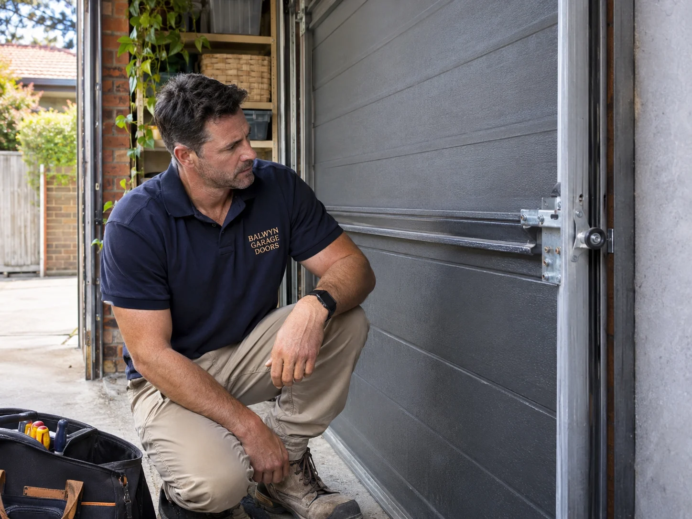

01 / REPAIRRepairs & servicing
Noisy, unreliable or refusing to move? Get the cause checked and understand the options before deciding what comes next.
- Sticking or uneven movement
- Rollers, cables & worn components
- Routine servicing & adjustments